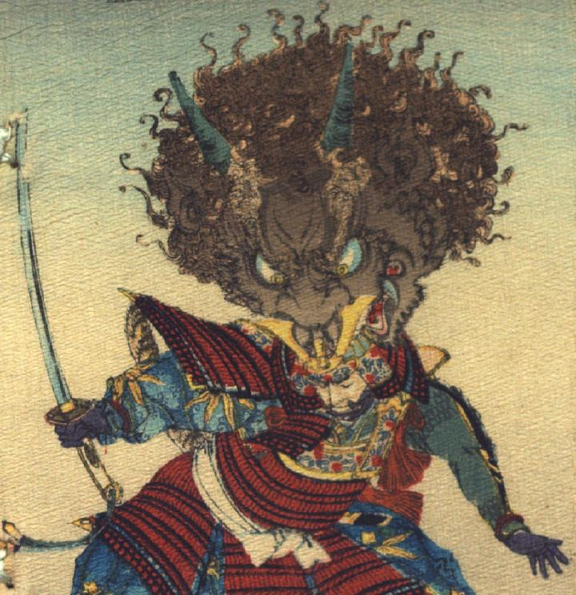

武士の頭に噛み付く酒呑童子の頭部。肌は茶色く、頭に縮れた毛が生え、額に2本の長い角が生えている。目はつりあがり、口は大きく裂け、牙が生えている。あごにひげが生えている。
出典：親書誌：U426_nichibunken_0113：Les Ogres d'Oyeyama／日付：2006／資源識別子：U426_nichibunken_0113_0001_0000
Copyright (c)2010- International Research Center for Japanese Studies, Kyoto, Japan. All rights reserved.